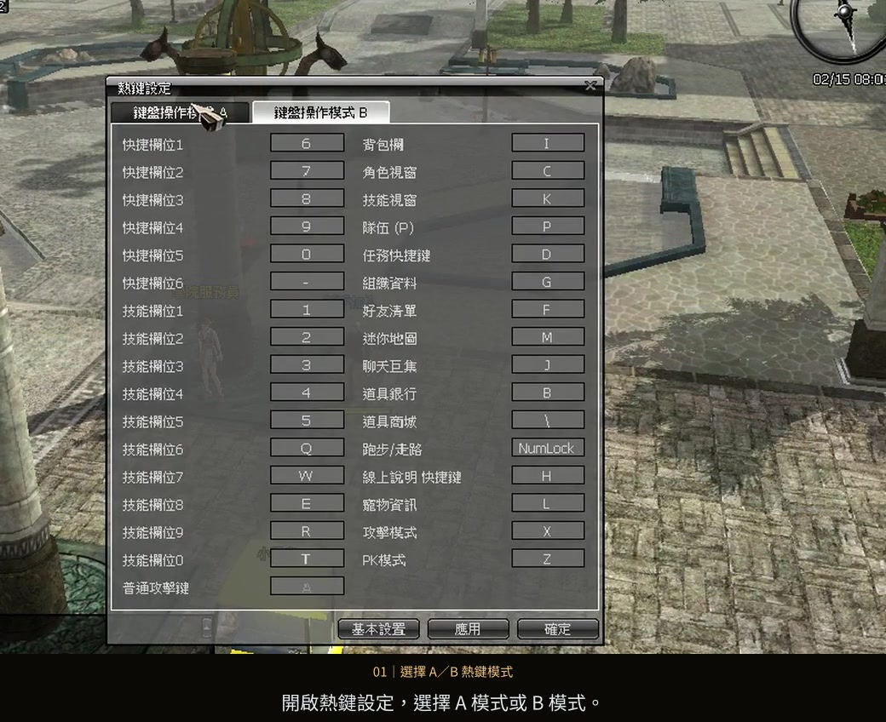
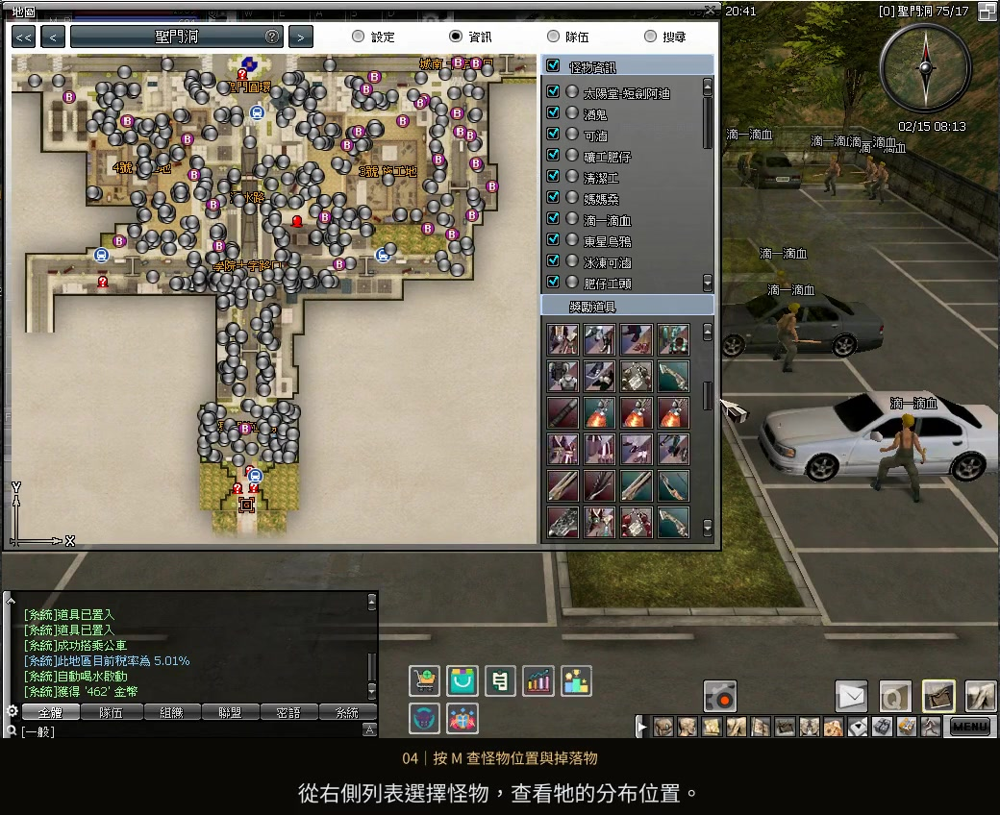
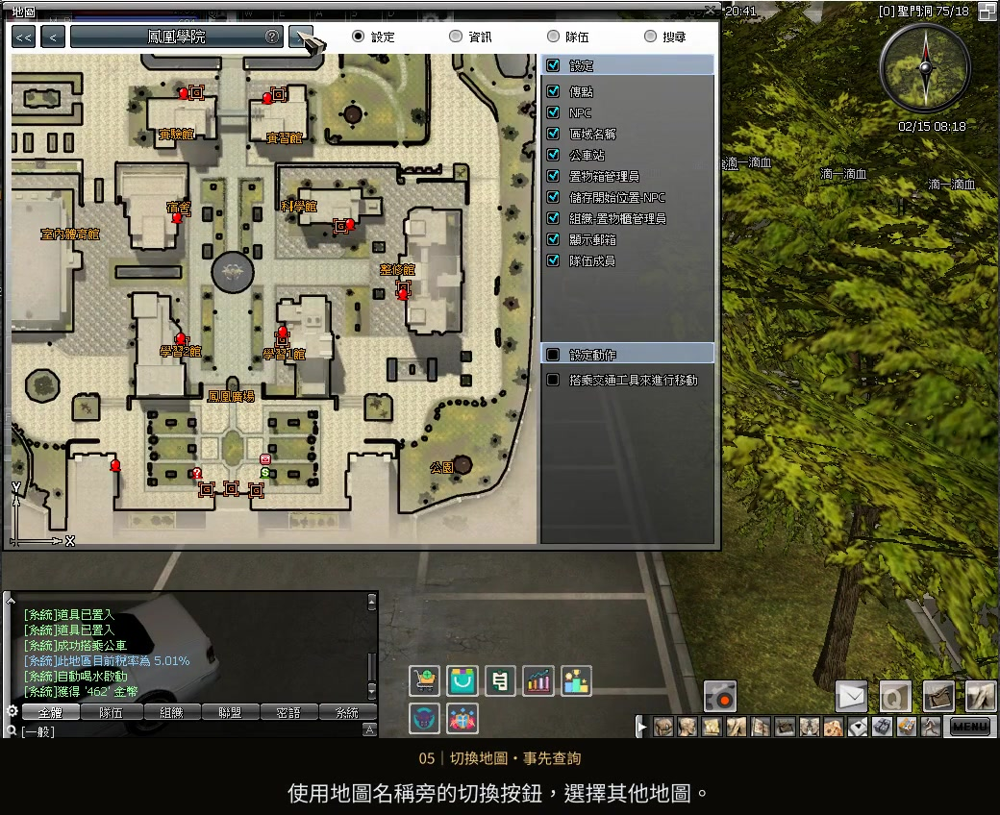

操作設定
選擇習慣的熱鍵模式
開啟熱鍵設定，選擇 A 模式或 B 模式，設定完成後套用。
遊玩指南 02 / 練等地圖基礎教學
1～26 等，以三所學校的校內練等為主。
出發前查看公車區間，搭配地圖資訊找怪物與掉落物。
影片暫時無法載入，請重新整理或使用下載影片連結。下方圖文仍可查閱。
選擇步驟，跳到對應操作。
依自己的操作習慣選擇熱鍵模式；先查好怪物與掉落物，再決定下一個練等地點。

開啟熱鍵設定，選擇 A 模式或 B 模式，設定完成後套用。

按 M 開啟地圖並切換到「資訊」。選擇怪物查看分布，下方獎勵道具可查閱掉落物。

使用上方切換按鈕選擇其他地圖，查詢怪物位置與掉落物，再決定練等地點。